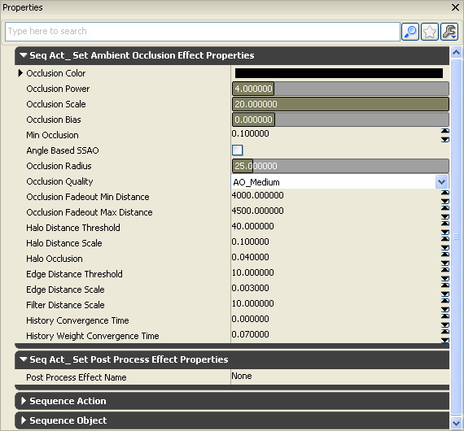
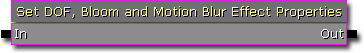
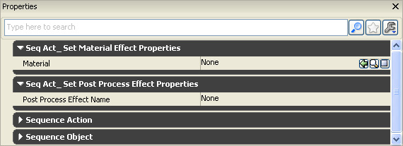
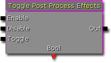

UDN
Search public documentation:
DevelopmentKitGemsControllingPostProcessEffectsCH
English Translation
日本語訳
한국어
Interested in the Unreal Engine?
Visit the Unreal Technology site.
Looking for jobs and company info?
Check out the Epic games site.
Questions about support via UDN?
Contact the UDN Staff
日本語訳
한국어
Interested in the Unreal Engine?
Visit the Unreal Technology site.
Looking for jobs and company info?
Check out the Epic games site.
Questions about support via UDN?
Contact the UDN Staff
UE3 主页 > 虚幻开发工具包精华文章 > 通过 Kismet 或 Unrealscript 控制后期特效
UE3主页 >Kismet可视化脚本 > 通过 Kismet 或 Unrealscript 控制后期特效
UE3 主页 > 后期特效 > 通过 Kismet 或 Unrealscript 控制后期特效
UE3主页 >Kismet可视化脚本 > 通过 Kismet 或 Unrealscript 控制后期特效
UE3 主页 > 后期特效 > 通过 Kismet 或 Unrealscript 控制后期特效
通过 Kismet 或 Unrealscript 控制后期特效
最后一次测试是在2011年3月份的UDK版本上进行的。
可以与 PC 兼容
- 通过 Kismet 或 Unrealscript 控制后期特效
概述
相关主题
设置环境特效属性 Kismet 序列动作
- OcclusionColor - 这个颜色将会替换其中有很多遮挡的地方的场景颜色。
- OcclusionPower - 应用于计算的遮挡值的幂数。幂数越高对比越强烈，但是还将需要调整其他诸如 OcclusionScale 这样的系数。
- OcclusionScale - 应用到计算的遮挡值的比例系数。
- OcclusionBias - 应用到计算的遮挡值的偏移。
- MinOcclusion - 应用所有其他转换之后的最小遮挡值。
- bAngleBasedSSAO - SSAO 质量改善，噪声更少、细分更多、没有发黑的平面、没有过亮的凸面，需要重新调整的参数。
- OcclusionRadius - 检查遮挡物像素周围的距离，以世界坐标为单位。
- OcclusionQuality - 环境遮挡效果的质量。 质量低可以提供最好的性能，同时比较适用于游戏过程中。质量中等的环境遮挡效果可以平滑两帧之间的噪声，性能消耗相对较高。 质量高可以使用额外的样本保留细节。
- OcclusionFadeoutMinDistance - 开始淡出遮挡系数的距离，以世界坐标为单位。它可以用于隐藏天空体上远处的失真现象。
- OcclusionFadeoutMaxDistance - 应该全部淡出遮挡系数的距离，以世界坐标为单位。
- HaloDistanceThreshold - 在必须将遮挡物看做是一个不同的对象的像素前面的距离，以世界坐标为单位。可以使用这个阙值辨别附近物体周围的光晕区域，例如一个第一人称武器。
- HaloDistanceScale - 增加远处像素的 HaloDistanceThreshold 的比例系数。值为 0.001 将会使 HaloDistanceThreshold 在世界坐标单位距离为 1000 的时候增大 1 个单位。
- HaloOcclusion - 分配给决定形成光环的样本的遮挡因数。0 将会全部遮挡该样本，增加的值映射为与减少的遮挡值呈二次曲线变化。
- EdgeDistanceThreshold - 两个必须作为边的像素之间的深度有所不同，因此不会完全模糊，以世界坐标为单位。
- HaloDistanceScale - 增加远处像素的 HaloDistanceThreshold 的比例系数。值为 .001 将会使 EdgeDistanceThreshold 在世界坐标单位距离为 1000 的时候增大 1 个单位。
- FilterDistanceScale - 应该映射到屏幕空间中的 kernel 大小的距离（以世界坐标为单位）。它可以用于减少远处像素的过滤 kernel 大小并保留细节，代价就是最后会留下很多噪点。
- HistoryConvergenceTime - 遮挡历史大约应该多长时间。时间越长（.5 秒）可以使帧之间的过渡更加平滑，噪点更少，但是历史痕迹会更加明显。0 代表关闭了这个功能（GPU 性能消耗和内存消耗更少）。
- HistoryWeightConvergenceTime - 权重历史大约应该汇合的时间。

Kismet 属性

Unrealscript
class SeqAct_SetAmbientOcclusionEffectProperties extends SeqAct_SetPostProcessEffectProperties
DependsOn(AmbientOcclusionEffect);
var() LinearColor OcclusionColor;
var() float OcclusionPower<UIMin=0.1|UIMax=20.0>;
var() float OcclusionScale<UIMin=0.0|UIMax=10.0>;
var() float OcclusionBias<UIMin=-1.0|UIMax=4.0>;
var() float MinOcclusion;
var() bool bAngleBasedSSAO;
var() float OcclusionRadius<UIMin=0.0|UIMax=256.0>;
var() EAmbientOcclusionQuality OcclusionQuality;
var() float OcclusionFadeoutMinDistance;
var() float OcclusionFadeoutMaxDistance;
var() float HaloDistanceThreshold;
var() float HaloDistanceScale;
var() float HaloOcclusion;
var() float EdgeDistanceThreshold;
var() float EdgeDistanceScale;
var() float FilterDistanceScale;
var() float HistoryConvergenceTime;
var() float HistoryWeightConvergenceTime;
event Activated()
{
local array<PostProcessEffect> PostProcessEffects;
local int i;
local AmbientOcclusionEffect AmbientOcclusionEffect;
GetPostProcessEffects(PostProcessEffects, class'AmbientOcclusionEffect');
if (PostProcessEffects.Length > 0)
{
for (i = 0; i < PostProcessEffects.length; ++i)
{
AmbientOcclusionEffect = AmbientOcclusionEffect(PostProcessEffects[i]);
if (AmbientOcclusionEffect != None)
{
AmbientOcclusionEffect.OcclusionColor = OcclusionColor;
AmbientOcclusionEffect.OcclusionPower = OcclusionPower;
AmbientOcclusionEffect.OcclusionScale = OcclusionScale;
AmbientOcclusionEffect.OcclusionBias = OcclusionBias;
AmbientOcclusionEffect.MinOcclusion = MinOcclusion;
AmbientOcclusionEffect.bAngleBasedSSAO = bAngleBasedSSAO;
AmbientOcclusionEffect.OcclusionRadius = OcclusionRadius;
AmbientOcclusionEffect.OcclusionQuality = OcclusionQuality;
AmbientOcclusionEffect.OcclusionFadeoutMinDistance = OcclusionFadeoutMinDistance;
AmbientOcclusionEffect.OcclusionFadeoutMaxDistance = OcclusionFadeoutMaxDistance;
AmbientOcclusionEffect.HaloDistanceThreshold = HaloDistanceThreshold;
AmbientOcclusionEffect.HaloDistanceScale = HaloDistanceScale;
AmbientOcclusionEffect.HaloOcclusion = HaloOcclusion;
AmbientOcclusionEffect.EdgeDistanceThreshold = EdgeDistanceThreshold;
AmbientOcclusionEffect.EdgeDistanceScale = EdgeDistanceScale;
AmbientOcclusionEffect.FilterDistanceScale = FilterDistanceScale;
AmbientOcclusionEffect.HistoryConvergenceTime = HistoryConvergenceTime;
AmbientOcclusionEffect.HistoryWeightConvergenceTime = HistoryWeightConvergenceTime;
}
}
}
}
defaultproperties
{
ObjName="Set Ambient Occlusion Effect Properties"
ObjCategory="Post Process"
VariableLinks(0)=(ExpectedType=class'SeqVar_Float',bHidden=true,LinkDesc="Occlusion Power",PropertyName=OcclusionPower)
VariableLinks(1)=(ExpectedType=class'SeqVar_Float',bHidden=true,LinkDesc="Occlusion Scale",PropertyName=OcclusionScale)
VariableLinks(2)=(ExpectedType=class'SeqVar_Float',bHidden=true,LinkDesc="Occlusion Bias",PropertyName=OcclusionBias)
VariableLinks(3)=(ExpectedType=class'SeqVar_Float',bHidden=true,LinkDesc="Min Occlusion",PropertyName=MinOcclusion)
VariableLinks(4)=(ExpectedType=class'SeqVar_Bool',bHidden=true,LinkDesc="Angle Based SSAO",PropertyName=bAngleBasedSSAO)
VariableLinks(5)=(ExpectedType=class'SeqVar_Float',bHidden=true,LinkDesc="Occlusion Radius",PropertyName=OcclusionRadius)
VariableLinks(6)=(ExpectedType=class'SeqVar_Float',bHidden=true,LinkDesc="Occlusion Fadeout Min Distance",PropertyName=OcclusionFadeoutMinDistance)
VariableLinks(7)=(ExpectedType=class'SeqVar_Float',bHidden=true,LinkDesc="Occlusion Fadeout Max Distance",PropertyName=OcclusionFadeoutMaxDistance)
VariableLinks(8)=(ExpectedType=class'SeqVar_Float',bHidden=true,LinkDesc="Halo Distance Threshold",PropertyName=HaloDistanceThreshold)
VariableLinks(9)=(ExpectedType=class'SeqVar_Float',bHidden=true,LinkDesc="Halo Distance Scale",PropertyName=HaloDistanceScale)
VariableLinks(10)=(ExpectedType=class'SeqVar_Float',bHidden=true,LinkDesc="Halo Occlusion",PropertyName=HaloOcclusion)
VariableLinks(11)=(ExpectedType=class'SeqVar_Float',bHidden=true,LinkDesc="Edge Distance Threshold",PropertyName=EdgeDistanceThreshold)
VariableLinks(12)=(ExpectedType=class'SeqVar_Float',bHidden=true,LinkDesc="Edge Distance Scale",PropertyName=EdgeDistanceScale)
VariableLinks(13)=(ExpectedType=class'SeqVar_Float',bHidden=true,LinkDesc="Filter Distance Scale",PropertyName=FilterDistanceScale)
VariableLinks(14)=(ExpectedType=class'SeqVar_Float',bHidden=true,LinkDesc="History Convergence Time",PropertyName=HistoryConvergenceTime)
VariableLinks(15)=(ExpectedType=class'SeqVar_Float',bHidden=true,LinkDesc="History Weight Convergence Time",PropertyName=HistoryWeightConvergenceTime)
OcclusionColor=(R=0.0,G=0.0,B=0.0,A=1.0)
OcclusionPower=4.0
OcclusionScale=20.0
OcclusionBias=0
MinOcclusion=.1
OcclusionRadius=25.0
OcclusionQuality=AO_Medium
OcclusionFadeoutMinDistance=4000.0
OcclusionFadeoutMaxDistance=4500.0
HaloDistanceThreshold=40.0
HaloDistanceScale=.1
HaloOcclusion=.04
EdgeDistanceThreshold=10.0
EdgeDistanceScale=.003
FilterDistanceScale=10.0
HistoryConvergenceTime=0
HistoryWeightConvergenceTime=.07
}
相关主题
设置模糊效果属性 Kismet 序列动作
- BlurKernelSize - 要进行模糊处理的距离，以像素单位。

Kismet 属性

Unrealscript
class SeqAct_SetBlurEffectProperties extends SeqAct_SetPostProcessEffectProperties
DependsOn(BlurEffect);
var() float BlurKernelSize;
event Activated()
{
local array<PostProcessEffect> PostProcessEffects;
local int i;
local BlurEffect BlurEffect;
GetPostProcessEffects(PostProcessEffects, class'BlurEffect');
if (PostProcessEffects.Length > 0)
{
for (i = 0; i < PostProcessEffects.length; ++i)
{
BlurEffect = BlurEffect(PostProcessEffects[i]);
if (BlurEffect != None)
{
BlurEffect.BlurKernelSize = BlurKernelSize;
}
}
}
}
defaultproperties
{
ObjName="Set Blur Effect Properties"
ObjCategory="Post Process"
VariableLinks(0)=(ExpectedType=class'SeqVar_Float',bHidden=true,LinkDesc="Blur Kernel Size",PropertyName=BlurKernelSize)
}
相关主题
设置景深和亮度溢出效果属性 Kismet 序列动作
- FalloffExponent - 用于已经将其标准化为 [0,1] 后的模糊量的指数。
- BlurKernelSize - 影响 DepthOfField bohek 的半径/场景变模糊的程度。
- MaxNear - 在 0 与 1 之间的值，用来限定对焦点平面前面的物品采用的模糊量。
- Min - 在 0 与 1 之间的值，用来限定要采用的模糊量。
- MaxFar - 在 0 与 1 之间的值，用来限定对焦点平面后面的物品采用的模糊量。
- FocusType - 控制确定焦点的方式。
- FocusInnerRadius - 内部焦半径。
- FocusDistance - 在启用 FOCUS_Distance 的时候使用。
- FocusPosition - 在启用 FOCUS_Position 的时候使用。
- BloomScale - 用于亮度溢出颜色的比例系数。
- BloomThreshold - 一个像素颜色的任何分量都必须比这个值大，以便增强亮度溢出效果。
- BloomTint - 与亮度溢出颜色相乘。
- BloomScreenBlendThreshold - 场景颜色亮度必须比这个值小，以便接收亮度溢出。这个与 Photoshop 的屏幕混合模式相似，可以防止由于向已经很亮的区域添加亮度溢出而产生的过饱和现象。默认值 1 代表亮度为 1 的像素将不会接收亮度溢出，而亮度为 .5 的像素将会接收半个亮度溢出。
- BlurBloomKernelSize - 亮度溢出效果的半径。
- DepthOfFieldType - 允许指定景深类型。根据性能和质量需求进行选择。
- SimpleDOF - 它可以模糊焦点内容并使用未进行模糊处理的场景进行重新组合（快速，几乎是恒速）。
- ReferenceDOF - 它可以在像素着色器中使用动态分支并具有圆形 Bokeh 形状效果（由于 Kernel 较大导致速度慢）。
- BokehDOF - 允许指定一个 Bokeh 纹理和一个更大的半径（需要 D3D11，在使用很多重点内容之外的内容时速度较慢）
- DepthOfFieldQuality - 调整可以改善性能的景深质量。
- BokehTexture - 启用 BokehDOF 时使用。

Kismet 属性

Unrealscript
class SeqAct_SetDOFAndBloomEffectProperties extends SeqAct_SetDOFEffectProperties
DependsOn(DOFAndBloomEffect);
var() float BloomScale;
var() float BloomThreshold;
var() color BloomTint;
var() float BloomScreenBlendThreshold;
var() float BlurBloomKernelSize;
var() EDOFType DepthOfFieldType;
var() EDOFQuality DepthOfFieldQuality;
var() Texture2D BokehTexture;
function SetProperties(PostProcessEffect PostProcessEffect)
{
local DOFAndBloomEffect DOFAndBloomEffect;
Super.SetProperties(PostProcessEffect);
DOFAndBloomEffect = DOFAndBloomEffect(PostProcessEffect);
if (DOFAndBloomEffect != None)
{
DOFAndBloomEffect.BloomScale = BloomScale;
DOFAndBloomEffect.BloomThreshold = BloomThreshold;
DOFAndBloomEffect.BloomTint = BloomTint;
DOFAndBloomEffect.BloomScreenBlendThreshold = BloomScreenBlendThreshold;
DOFAndBloomEffect.BlurBloomKernelSize = BlurBloomKernelSize;
DOFAndBloomEffect.DepthOfFieldType = DepthOfFieldType;
DOFAndBloomEffect.DepthOfFieldQuality = DepthOfFieldQuality;
DOFAndBloomEffect.BokehTexture = BokehTexture;
}
}
defaultproperties
{
ObjName="Set DOF And Bloom Effect Properties"
ObjCategory="Post Process"
BloomScale=1.0
BloomThreshold=1.0
BloomTint=(R=255,G=255,B=255)
BloomScreenBlendThreshold=10
BlurKernelSize=16.0
BlurBloomKernelSize=16.0
VariableLinks(8)=(ExpectedType=class'SeqVar_Float',bHidden=true,LinkDesc="Bloom Scale",PropertyName=BloomScale)
VariableLinks(9)=(ExpectedType=class'SeqVar_Float',bHidden=true,LinkDesc="Bloom Threshold",PropertyName=BloomThreshold)
VariableLinks(10)=(ExpectedType=class'SeqVar_Float',bHidden=true,LinkDesc="Bloom Screen Blend Threshold",PropertyName=BloomScreenBlendThreshold)
VariableLinks(11)=(ExpectedType=class'SeqVar_Float',bHidden=true,LinkDesc="Blur Bloom Kernel Size",PropertyName=BlurBloomKernelSize)
}
相关主题
设置景深、亮度溢出和运动模糊属性 Kismet 序列动作
- MaxVelocity - 最大模糊向量值。这个值可以限定模糊量。
- MotionBlurAmount - 这是一个可以作为模糊的“敏感度”的比例系数。
- FullMotionBlur - 是否所有内容（静态/动态对象）都应该进行运动模糊处理。如果这个属性被禁用，那么只有运动的对象才会进行模糊处理。
- CameraRotationThreshold - 单个帧过程中相机快速旋转时关闭运动模糊的时间阙值（以度为单位）。
- CameraTranslationThreshold - 单个帧过程中相机快速平移时关闭运动模糊的时间阙值（以世界单位为单位）。

Kismet 属性

Unrealscript
class SeqAct_SetDOFBloomMotionBlurEffect extends SeqAct_SetDOFAndBloomEffectProperties
DependsOn(DOFBloomMotionBlurEffect);
var() float MaxVelocity;
var() float MotionBlurAmount;
var() bool FullMotionBlur;
var() float CameraRotationThreshold;
var() float CameraTranslationThreshold;
function SetProperties(PostProcessEffect PostProcessEffect)
{
local DOFBloomMotionBlurEffect DOFBloomMotionBlurEffect;
Super.SetProperties(PostProcessEffect);
DOFBloomMotionBlurEffect = DOFBloomMotionBlurEffect(PostProcessEffect);
if (DOFBloomMotionBlurEffect != None)
{
DOFBloomMotionBlurEffect.MaxVelocity = MaxVelocity;
DOFBloomMotionBlurEffect.MotionBlurAmount = MotionBlurAmount;
DOFBloomMotionBlurEffect.FullMotionBlur = FullMotionBlur;
DOFBloomMotionBlurEffect.CameraRotationThreshold = CameraRotationThreshold;
DOFBloomMotionBlurEffect.CameraTranslationThreshold = CameraTranslationThreshold;
}
}
defaultproperties
{
ObjName="Set DOF, Bloom and Motion Blur Effect Properties"
ObjCategory="Post Process"
MotionBlurAmount=0.5f
MaxVelocity=1.0f
FullMotionBlur=true
CameraRotationThreshold=90.0f
CameraTranslationThreshold=10000.0f
VariableLinks(12)=(ExpectedType=class'SeqVar_Float',bHidden=true,LinkDesc="Max Velocity",PropertyName=MaxVelocity)
VariableLinks(13)=(ExpectedType=class'SeqVar_Float',bHidden=true,LinkDesc="Motion Blur Amount",PropertyName=MotionBlurAmount)
VariableLinks(14)=(ExpectedType=class'SeqVar_Bool',bHidden=true,LinkDesc="Full Motion Blur",PropertyName=FullMotionBlur)
VariableLinks(15)=(ExpectedType=class'SeqVar_Float',bHidden=true,LinkDesc="Camera Rotation Threshold",PropertyName=CameraRotationThreshold)
VariableLinks(16)=(ExpectedType=class'SeqVar_Float',bHidden=true,LinkDesc="Camera Translation Threshold",PropertyName=CameraTranslationThreshold)
}
相关主题
设置材质效果属性 Kismet 序列动作
- Material - 要设置进行后期特效处理的材质。
- Material Object - 可以将它设置为材质引用或材质实例 actor 引用。这个 kismet 节点将会对应找到材质引用。

Kismet 属性

Unrealscript
class SeqAct_SetMaterialEffectProperties extends SeqAct_SetPostProcessEffectProperties
DependsOn(MaterialEffect);
var() MaterialInterface Material;
var Object ObjectReference;
event Activated()
{
local array<PostProcessEffect> PostProcessEffects;
local int i;
local MaterialEffect MaterialEffect;
local MaterialInterface MaterialInterface;
local MaterialInstanceActor MaterialInstanceActor;
GetPostProcessEffects(PostProcessEffects, class'MaterialEffect');
if (PostProcessEffects.Length > 0)
{
for (i = 0; i < PostProcessEffects.length; ++i)
{
MaterialEffect = MaterialEffect(PostProcessEffects[i]);
if (MaterialEffect != None)
{
if (ObjectReference != None)
{
MaterialInterface = MaterialInterface(ObjectReference);
if (MaterialInterface != None)
{
MaterialEffect.Material = MaterialInterface;
}
else
{
MaterialInstanceActor = MaterialInstanceActor(ObjectReference);
if (MaterialInstanceActor != None)
{
MaterialEffect.Material = MaterialInstanceActor.MatInst;
}
}
}
else
{
MaterialEffect.Material = Material;
}
}
}
}
}
defaultproperties
{
ObjName="Set Material Effect Properties"
ObjCategory="Post Process"
VariableLinks(0)=(ExpectedType=class'SeqVar_Object',bHidden=true,LinkDesc="Material Object",PropertyName=ObjectReference)
}
相关主题
设置动态模糊效果属性 Kismet 序列动作
- MaxVelocity - 最大模糊向量值。这个值可以限定模糊量。
- MotionBlurAmount - 这是一个可以作为模糊的“敏感度”的比例系数。
- FullMotionBlur - 是否所有内容（静态/动态对象）都应该进行运动模糊处理。如果这个属性被禁用，那么只有运动的对象才会进行模糊处理。
- CameraRotationThreshold - 单个帧过程中相机快速旋转时关闭运动模糊的时间阙值（以度为单位）。
- CameraTranslationThreshold - 单个帧过程中相机快速平移时关闭运动模糊的时间阙值（以世界单位为单位）。

Kismet 属性

Unrealscript
class SeqAct_SetMotionBlurEffectProperties extends SeqAct_SetPostProcessEffectProperties
DependsOn(MotionBlurEffect);
var() float MaxVelocity;
var() float MotionBlurAmount;
var() bool FullMotionBlur;
var() float CameraRotationThreshold;
var() float CameraTranslationThreshold;
event Activated()
{
local array<PostProcessEffect> PostProcessEffects;
local int i;
local MotionBlurEffect MotionBlurEffect;
GetPostProcessEffects(PostProcessEffects, class'MotionBlurEffect');
if (PostProcessEffects.Length > 0)
{
for (i = 0; i < PostProcessEffects.length; ++i)
{
MotionBlurEffect = MotionBlurEffect(PostProcessEffects[i]);
if (MotionBlurEffect != None)
{
MotionBlurEffect.MaxVelocity = MaxVelocity;
MotionBlurEffect.MotionBlurAmount = MotionBlurAmount;
MotionBlurEffect.FullMotionBlur = FullMotionBlur;
MotionBlurEffect.CameraRotationThreshold = CameraRotationThreshold;
MotionBlurEffect.CameraTranslationThreshold = CameraTranslationThreshold;
}
}
}
}
defaultproperties
{
ObjName="Set Motion Blur Effect Properties"
ObjCategory="Post Process"
MotionBlurAmount=0.5f
MaxVelocity=1.0f
FullMotionBlur=true
CameraRotationThreshold=90.0f
CameraTranslationThreshold=10000.0f
VariableLinks(0)=(ExpectedType=class'SeqVar_Float',bHidden=true,LinkDesc="Max Velocity",PropertyName=MaxVelocity)
VariableLinks(1)=(ExpectedType=class'SeqVar_Float',bHidden=true,LinkDesc="Motion Blur Amount",PropertyName=MotionBlurAmount)
VariableLinks(2)=(ExpectedType=class'SeqVar_Bool',bHidden=true,LinkDesc="Full Motion Blur",PropertyName=FullMotionBlur)
VariableLinks(3)=(ExpectedType=class'SeqVar_Float',bHidden=true,LinkDesc="Camera Rotation Threshold",PropertyName=CameraRotationThreshold)
VariableLinks(4)=(ExpectedType=class'SeqVar_Float',bHidden=true,LinkDesc="Camera Translation Threshold",PropertyName=CameraTranslationThreshold)
}
相关主题
设置 Uber 后期特效属性 Kismet 序列动作
- SceneShadows - 为场景的阴影着色。
- SceneHighLights - 为场景的高光部分着色。
- SceneMidTones - 为场景的中间色调着色。
- SceneDesaturation - 去除场景的饱和度。0 表示没有去除饱和度，1 表示完全饱和度。
- SceneColorize - 为整个场景着色。
- TonemapperType - 允许指定可以将 HDR 颜色映射到 LDR 颜色范围内的色调映射函数。
- TonemapperRange - 这个 tonemapper 属性允许指定映射到最大 LDR 值的 HDR 亮度值。比较亮的值将会被映射为白色（在 2 到 16 这个范围内的值效果比较好）。只会影响“自定义”色调映射器。
- ToeFactor - 这个色调映射器属性允许调整深色的映射（色调映射器末端）。因为每个颜色通道分别进行调整，所以可以引入轻微变化颜色以及饱和改变。只会影响“自定义”色调映射器。0 会产生线性结果，而 1 会挤压暗面并产生一个更加逼真的场景。
- TonemapperScale - 缩放色调映射器的输入值。只在指定色调映射器的情况下使用。0 为黑色。
- SoftEdgeKernelSize - 运动模糊软边的半径。使用比 0 大的值可以启动软边运动模糊。这个方法可以通过对运动对象的黑影进行模糊处理改善运动模糊效果。这个方法可以在屏幕空间中使用。因此，这个方法的性能只取决于屏幕大小，而不是对象/顶点/三角形数量。
- bEnableImageGrain - 无论是否启用图片颗粒（噪点），都要争取 8 位量化假影讯号并模拟胶片噪点（通过 SceneImageGrainScale 进行缩放）。
- SceneImageGrainScale - 图像颗粒缩放，只作用于暗色。
- Weight Small - 为了调整亮度溢出获取一个额外的内部，发光要更加强烈。如果使用了这个功能，那么根据亮度溢出半径它可能会消耗其他性能。但是，在某些情况下，它可能会随着降低分辨率而使半径变大的同时加快速度。计算实际权重作为所有亮度溢出权重的比率。
- Weight Medium - 要调整亮度溢出形状以减少多余的内部和外部权重。但是，在某些情况下，它可能会随着降低分辨率而使半径变大的同时加快速度。计算实际权重作为所有亮度溢出权重的比率。
- Weight Large - 为了调整亮度溢出获取一个额外的外部，发光范围要更加广泛。如果使用了这个功能，那么根据亮度溢出半径它可能会消耗其他性能。但是，在某些情况下，它可能会随着降低分辨率而使半径变大的同时加快速度。计算实际权重作为所有亮度溢出权重的比率。
- Size Multiplier Small - 缩放小的 kernel 大小。这个值的合理范围是 0.1 到 0.5。只有在 BloomWeightSmall 指定某些权重的情况下才可以使用这个属性。
- Size Multiplier Medium - 缩放中等的 kernel 大小。这个值的合理范围是 0.5 到 1.5。
- Size Multiplier Large - 缩放大的 kernel 大小。这个值的合理范围为 2 到 4。只有在 BloomWeightLarge 指定某些权重的情况下才可以使用这个属性。
- bScaleEffectsWithViewSize - 会影响 BlurKernelSize，根据视图大小缩放这个属性。

Kismet 属性

Unrealscript
class SeqAct_SetUberPostProcessEffect extends SeqAct_SetPostProcessEffectProperties
DependsOn(UberPostProcessEffect);
var() vector SceneShadows<DisplayName=Shadows>;
var() vector SceneHighLights<DisplayName=HighLights>;
var() vector SceneMidTones<DisplayName=MidTones>;
var() float SceneDesaturation<DisplayName=Desaturation>;
var() vector SceneColorize<DisplayName=Colorize>;
var() ETonemapperType TonemapperType;
var() float TonemapperRange;
var() float TonemapperToeFactor<DisplayName=ToeFactor>;
var() float TonemapperScale;
var() float MotionBlurSoftEdgeKernelSize<DisplayName=SoftEdgeKernelSize>;
var() bool bEnableImageGrain;
var() float SceneImageGrainScale;
var() float BloomWeightSmall<DisplayName=Weight Small>;
var() float BloomWeightMedium<DisplayName=Weight Medium>;
var() float BloomWeightLarge<DisplayName=Weight Large>;
var() float BloomSizeScaleSmall<DisplayName=Size Multiplier Small>;
var() float BloomSizeScaleMedium<DisplayName=Size Multiplier Medium>;
var() float BloomSizeScaleLarge<DisplayName=Size Multiplier Large>;
var() bool bScaleEffectsWithViewSize;
event Activated()
{
local array<PostProcessEffect> PostProcessEffects;
local int i;
local UberPostProcessEffect UberPostProcessEffect;
GetPostProcessEffects(PostProcessEffects, class'UberPostProcessEffect');
if (PostProcessEffects.Length > 0)
{
for (i = 0; i < PostProcessEffects.length; ++i)
{
UberPostProcessEffect = UberPostProcessEffect(PostProcessEffects[i]);
if (UberPostProcessEffect != None)
{
UberPostProcessEffect.SceneShadows = SceneShadows;
UberPostProcessEffect.SceneHighLights = SceneHighLights;
UberPostProcessEffect.SceneMidTones = SceneMidTones;
UberPostProcessEffect.SceneDesaturation = SceneDesaturation;
UberPostProcessEffect.SceneColorize = SceneColorize;
UberPostProcessEffect.TonemapperType = TonemapperType;
UberPostProcessEffect.TonemapperRange = TonemapperRange;
UberPostProcessEffect.TonemapperToeFactor = TonemapperToeFactor;
UberPostProcessEffect.TonemapperScale = TonemapperScale;
UberPostProcessEffect.MotionBlurSoftEdgeKernelSize = MotionBlurSoftEdgeKernelSize;
UberPostProcessEffect.bEnableImageGrain = bEnableImageGrain;
UberPostProcessEffect.SceneImageGrainScale = SceneImageGrainScale;
UberPostProcessEffect.BloomWeightSmall = BloomWeightSmall;
UberPostProcessEffect.BloomWeightMedium = BloomWeightMedium;
UberPostProcessEffect.BloomWeightLarge = BloomWeightLarge;
UberPostProcessEffect.BloomSizeScaleSmall = BloomSizeScaleSmall;
UberPostProcessEffect.BloomSizeScaleMedium = BloomSizeScaleMedium;
UberPostProcessEffect.BloomSizeScaleLarge = BloomSizeScaleLarge;
UberPostProcessEffect.bScaleEffectsWithViewSize = bScaleEffectsWithViewSize;
}
}
}
}
defaultproperties
{
ObjName="Set Uber Post Process Effect Properties"
ObjCategory="Post Process"
SceneShadows=(X=0.0,Y=0.0,Z=-0.003)
SceneHighLights=(X=0.8,Y=0.8,Z=0.8)
SceneMidTones=(X=1.3,Y=1.3,Z=1.3)
SceneDesaturation=0.4
SceneColorize=(X=1,Y=1,Z=1)
bEnableImageGrain=false
TonemapperScale=1.0
SceneImageGrainScale=0.02
TonemapperRange=8
TonemapperToeFactor=1
BloomWeightSmall=0
BloomWeightMedium=1
BloomWeightLarge=0
BloomSizeScaleSmall=0.25
BloomSizeScaleMedium=1
BloomSizeScaleLarge=3
VariableLinks(0)=(ExpectedType=class'SeqVar_Vector',bHidden=true,LinkDesc="Scene Shadows",PropertyName=SceneShadows)
VariableLinks(1)=(ExpectedType=class'SeqVar_Vector',bHidden=true,LinkDesc="Scene HighLights",PropertyName=SceneHighLights)
VariableLinks(2)=(ExpectedType=class'SeqVar_Vector',bHidden=true,LinkDesc="Scene MidTones",PropertyName=SceneMidTones)
VariableLinks(3)=(ExpectedType=class'SeqVar_Float',bHidden=true,LinkDesc="Scene Desaturation",PropertyName=SceneDesaturation)
VariableLinks(4)=(ExpectedType=class'SeqVar_Vector',bHidden=true,LinkDesc="Scene Colorize",PropertyName=SceneColorize)
VariableLinks(5)=(ExpectedType=class'SeqVar_Float',bHidden=true,LinkDesc="Tonemapper Range",PropertyName=TonemapperRange)
VariableLinks(6)=(ExpectedType=class'SeqVar_Float',bHidden=true,LinkDesc="Tonemapper Toe Factor",PropertyName=TonemapperToeFactor)
VariableLinks(7)=(ExpectedType=class'SeqVar_Float',bHidden=true,LinkDesc="Tonemapper Scale",PropertyName=TonemapperScale)
VariableLinks(8)=(ExpectedType=class'SeqVar_Float',bHidden=true,LinkDesc="Motion Blur Soft Edge Kernel Size",PropertyName=MotionBlurSoftEdgeKernelSize)
VariableLinks(9)=(ExpectedType=class'SeqVar_Bool',bHidden=true,LinkDesc="Enable Image Grain",PropertyName=bEnableImageGrain)
VariableLinks(10)=(ExpectedType=class'SeqVar_Float',bHidden=true,LinkDesc="Scene Image Grain Scale",PropertyName=SceneImageGrainScale)
VariableLinks(11)=(ExpectedType=class'SeqVar_Float',bHidden=true,LinkDesc="Bloom Weight Small",PropertyName=BloomWeightSmall)
VariableLinks(12)=(ExpectedType=class'SeqVar_Float',bHidden=true,LinkDesc="Bloom Weight Medium",PropertyName=BloomWeightMedium)
VariableLinks(13)=(ExpectedType=class'SeqVar_Float',bHidden=true,LinkDesc="Bloom Weight Large",PropertyName=BloomWeightLarge)
VariableLinks(14)=(ExpectedType=class'SeqVar_Float',bHidden=true,LinkDesc="Bloom Size Scale Small",PropertyName=BloomSizeScaleSmall)
VariableLinks(15)=(ExpectedType=class'SeqVar_Float',bHidden=true,LinkDesc="Bloom Size Scale Medium",PropertyName=BloomSizeScaleMedium)
VariableLinks(16)=(ExpectedType=class'SeqVar_Float',bHidden=true,LinkDesc="Bloom Size Scale Large",PropertyName=BloomSizeScaleLarge)
VariableLinks(17)=(ExpectedType=class'SeqVar_Bool',bHidden=true,LinkDesc="Scale Effects With View Size",PropertyName=bScaleEffectsWithViewSize)
}
相关主题
触发后期特效 Kismet 序列动作
- Bool - 会返回触发值。

Kismet 属性

Unrealscript
class SeqAct_TogglePostProcessEffect extends SeqAct_SetPostProcessEffectProperties;
var bool Value;
event Activated()
{
local array<PostProcessEffect> PostProcessEffects;
local int i;
if (InputLinks[0].bHasImpulse) // Enable
{
Value = true;
}
else if (InputLinks[1].bHasImpulse) // Disable
{
Value = false;
}
else if (InputLinks[2].bHasImpulse) // Toggle
{
Value = !Value;
}
GetPostProcessEffects(PostProcessEffects);
if (PostProcessEffects.Length > 0)
{
for (i = 0; i < PostProcessEffects.length; ++i)
{
if (PostProcessEffects[i] != None)
{
PostProcessEffects[i].bShowInEditor = Value;
PostProcessEffects[i].bShowInGame = Value;
}
}
}
}
defaultproperties
{
ObjName="Toggle Post Process Effects"
ObjCategory="Post Process"
InputLinks(0)=(LinkDesc="Enable")
InputLinks(1)=(LinkDesc="Disable")
InputLinks(2)=(LinkDesc="Toggle")
VariableLinks(0)=(ExpectedType=class'SeqVar_Bool',LinkDesc="Bool",bWriteable=true,MinVars=0,PropertyName=Value)
}
隐藏的 Kismet 节点
 这就是我显示 Occlusion Power（遮挡幂数）节点后的 Set Ambient Occlusion Effect Properties Kismet（设置环境遮挡效果属性 Kismet）节点。
这就是我显示 Occlusion Power（遮挡幂数）节点后的 Set Ambient Occlusion Effect Properties Kismet（设置环境遮挡效果属性 Kismet）节点。

SeqAct_SetPostProcessEffectProperties
Unrealscript
class SeqAct_SetPostProcessEffectProperties extends SequenceAction
abstract;
var() Name PostProcessEffectName;
function GetPostProcessEffects(out array<PostProcessEffect> PostProcessEffects, optional class<PostProcessEffect> MatchingPostProcessEffectClass = class'PostProcessEffect')
{
local WorldInfo WorldInfo;
local PostProcessEffect PostProcessEffect;
local PlayerController PlayerController;
local LocalPlayer LocalPlayer;
WorldInfo = class'WorldInfo'.static.GetWorldInfo();
// 影响世界后期处理链
if (WorldInfo != None)
{
ForEach WorldInfo.AllControllers(class'PlayerController', PlayerController)
{
LocalPlayer = LocalPlayer(PlayerController.Player);
if (LocalPlayer != None && LocalPlayer.PlayerPostProcess != None)
{
PostProcessEffect = LocalPlayer.PlayerPostProcess.FindPostProcessEffect(PostProcessEffectName);
if (PostProcessEffect != None && (PostProcessEffect.Class == MatchingPostProcessEffectClass || ClassIsChildOf(PostProcessEffect.Class, MatchingPostProcessEffectClass)))
{
PostProcessEffects.AddItem(PostProcessEffect);
}
}
}
}
}
defaultproperties
{
}
SeqAct_SetDOFEffectProperties
Unrealscript
class SeqAct_SetDOFEffectProperties extends SeqAct_SetPostProcessEffectProperties
DependsOn(DOFEffect)
abstract;
var() float FalloffExponent;
var() float BlurKernelSize;
var() float MaxNearBlurAmount<DisplayName=MaxNear>;
var() float MinBlurAmount<DisplayName=Min>;
var() float MaxFarBlurAmount<DisplayName=MaxFar>;
var() EFocusType FocusType;
var() float FocusInnerRadius;
var() float FocusDistance;
var() vector FocusPosition;
event Activated()
{
local array<PostProcessEffect> PostProcessEffects;
local int i;
GetPostProcessEffects(PostProcessEffects);
if (PostProcessEffects.Length > 0)
{
for (i = 0; i < PostProcessEffects.length; ++i)
{
SetProperties(PostProcessEffects[i]);
}
}
}
function SetProperties(PostProcessEffect PostProcessEffect)
{
local DOFEffect DOFEffect;
DOFEffect = DOFEffect(PostProcessEffect);
if (DOFEffect != None)
{
DOFEffect.FalloffExponent = FalloffExponent;
DOFEffect.BlurKernelSize = BlurKernelSize;
DOFEffect.MaxNearBlurAmount = MaxNearBlurAmount;
DOFEffect.MinBlurAmount = MinBlurAmount;
DOFEffect.MaxFarBlurAmount = MaxFarBlurAmount;
DOFEffect.FocusType = FocusType;
DOFEffect.FocusInnerRadius = FocusInnerRadius;
DOFEffect.FocusDistance = FocusDistance;
DOFEffect.FocusPosition = FocusPosition;
}
}
defaultproperties
{
FocusType=FOCUS_Distance
FocusDistance=800
FocusInnerRadius=400
FalloffExponent=2
BlurKernelSize=2
MaxNearBlurAmount=1
MinBlurAmount=0
MaxFarBlurAmount=1
VariableLinks(0)=(ExpectedType=class'SeqVar_Float',bHidden=true,LinkDesc="Falloff Exponent",PropertyName=FalloffExponent)
VariableLinks(1)=(ExpectedType=class'SeqVar_Float',bHidden=true,LinkDesc="Blur Kernel Size",PropertyName=BlurKernelSize)
VariableLinks(2)=(ExpectedType=class'SeqVar_Float',bHidden=true,LinkDesc="Max Near",PropertyName=MaxNearBlurAmount)
VariableLinks(3)=(ExpectedType=class'SeqVar_Float',bHidden=true,LinkDesc="Min",PropertyName=MinBlurAmount)
VariableLinks(4)=(ExpectedType=class'SeqVar_Float',bHidden=true,LinkDesc="Max Far",PropertyName=MaxFarBlurAmount)
VariableLinks(5)=(ExpectedType=class'SeqVar_Float',bHidden=true,LinkDesc="Focus Inner Radius",PropertyName=FocusInnerRadius)
VariableLinks(6)=(ExpectedType=class'SeqVar_Float',bHidden=true,LinkDesc="Focus Distance",PropertyName=FocusDistance)
VariableLinks(7)=(ExpectedType=class'SeqVar_Vector',bHidden=true,LinkDesc="Focus Position",PropertyName=FocusPosition)
}
Kismet 示例

下载
- 下载这篇相关说明 (PostProcessingContent.zip) 的脚本和内容。